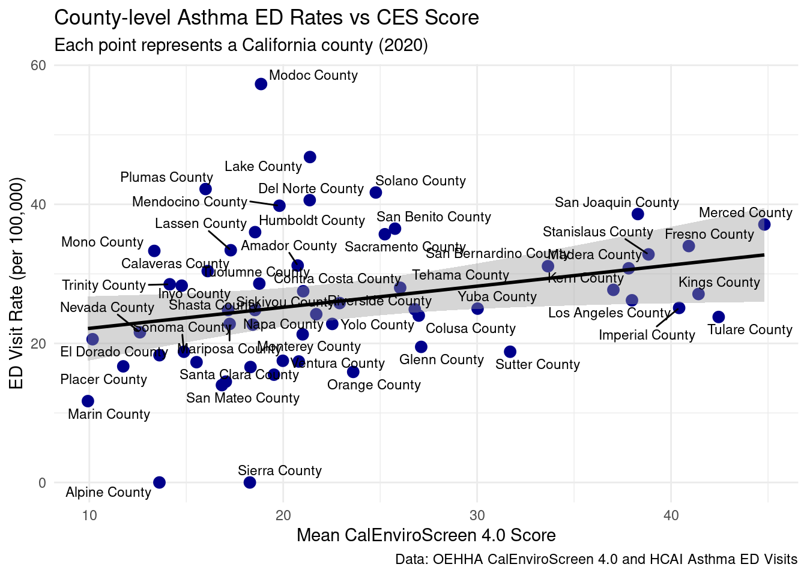
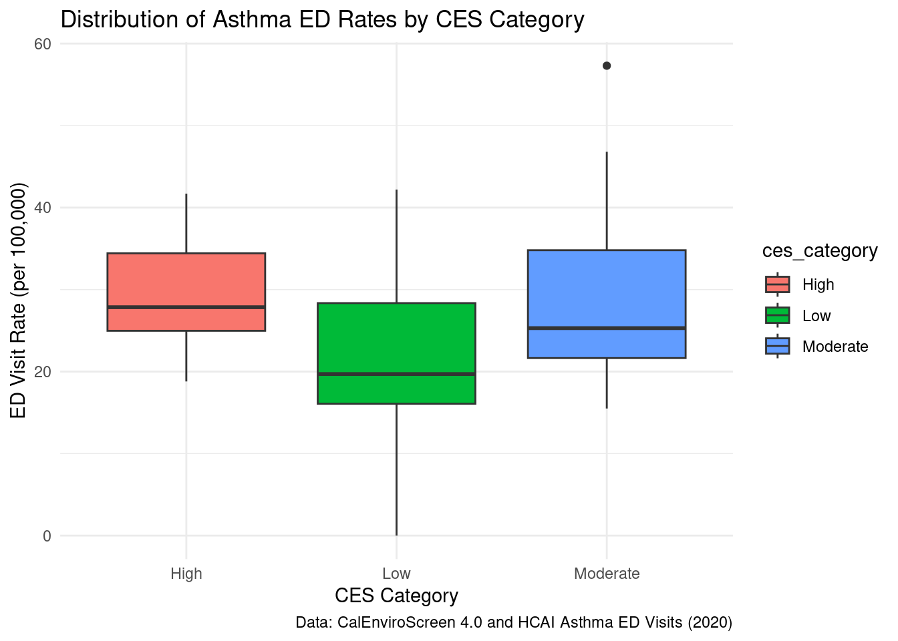
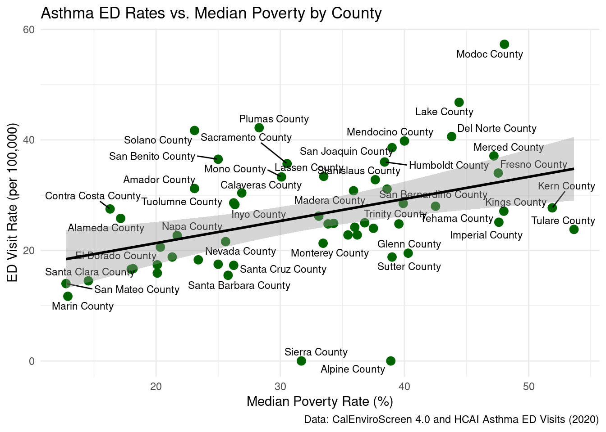
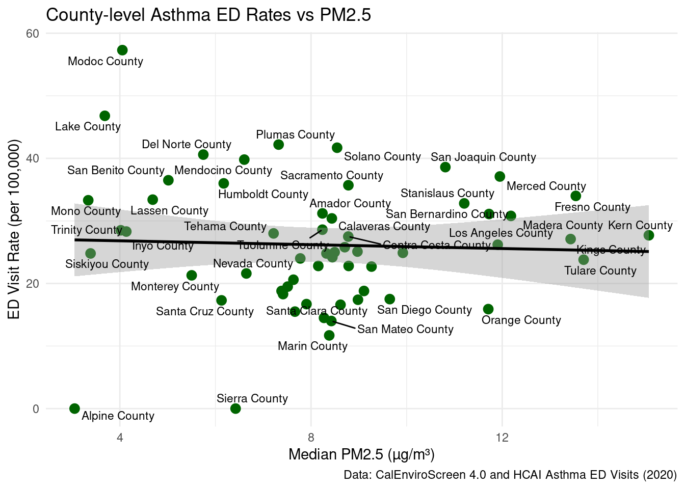

# read in and clean all 3 files (reuse from Milestone 3)# chhs_asthma_ed, calenviroscreen_measures_2021, ces_scores_demog# ... your existing df_asthma, df_env_measures, df_scores code ...df_combined <- df_scores %>%left_join(df_asthma, by ="county") %>%left_join(df_env_measures, by ="county")# any extra derived variables (env_exposure_index, ces_category, etc.)# e.g.:df_combined <- df_combined %>%mutate(ces_category =case_when(mean_ces_4_0_score >=quantile(mean_ces_4_0_score, 2/3, na.rm =TRUE) ~"High",mean_ces_4_0_score <=quantile(mean_ces_4_0_score, 1/3, na.rm =TRUE) ~"Low",TRUE~"Moderate"))str(df_combined)
tibble [58 × 11] (S3: tbl_df/tbl/data.frame)
$ county : chr [1:58] "Alameda County" "Alpine County" "Amador County" "Butte County" ...
$ mean_ces_4_0_score : num [1:58] 22.9 13.6 20.7 21.7 16.1 ...
$ total_population : int [1:58] 1656754 1039 38429 225817 45514 21454 1142251 27495 188563 984521 ...
$ year : num [1:58] 2020 2020 2020 2020 2020 2020 2020 2020 2020 2020 ...
$ number_of_ed_visits : num [1:58] 4282 0 103 474 111 ...
$ age_adjusted_ed_visit_rate: num [1:58] 25.8 0 31.2 24.2 30.4 24 27.5 40.6 20.6 34 ...
$ median_pm2_5 : num [1:58] 8.71 3.05 8.24 8.45 8.44 ...
$ median_diesel_pm : num [1:58] 0.26041 0.00262 0.01219 0.0703 0.00744 ...
$ median_poverty : num [1:58] 17.1 38.9 23.1 36 26.9 ...
$ median_traffic : num [1:58] 928 70.2 212.7 455.3 214.8 ...
$ ces_category : chr [1:58] "Moderate" "Low" "Moderate" "Moderate" ...
#df_combined %>%select(county,mean_ces_4_0_score,median_pm2_5,median_poverty,age_adjusted_ed_visit_rate) %>%arrange(desc(age_adjusted_ed_visit_rate)) %>%slice_head(n =10) %>%gt() %>%tab_header(title ="Counties with Highest Asthma ED Visit Rates",subtitle ="With CalEnviroScreen scores and key environmental indicators") %>%cols_label(county ="County",mean_ces_4_0_score ="CES 4.0 (Mean)",median_pm2_5 ="PM2.5 (Median, µg/m³)",median_poverty ="Poverty (Median, %)",age_adjusted_ed_visit_rate ="Asthma ED Rate (Age-Adjusted)") %>%fmt_number(columns =where(is.numeric),decimals =2) %>%tab_source_note(md("*Note:* Asthma ED rate is age-adjusted (CHHS). Environmental indicators are tract-level medians aggregated to county."))
Counties with Highest Asthma ED Visit Rates
With CalEnviroScreen scores and key environmental indicators
County
CES 4.0 (Mean)
PM2.5 (Median, µg/m³)
Poverty (Median, %)
Asthma ED Rate (Age-Adjusted)
Modoc County
18.86
4.05
48.05
57.30
Lake County
21.38
3.69
44.40
46.80
Plumas County
16.00
7.32
28.30
42.20
Solano County
24.78
8.55
23.10
41.70
Del Norte County
21.37
5.75
43.80
40.60
Mendocino County
19.80
6.60
40.00
39.80
San Joaquin County
38.29
10.81
39.00
38.60
Merced County
44.81
11.95
47.20
37.10
San Benito County
25.77
5.02
25.00
36.50
Humboldt County
18.55
6.17
38.40
36.00
Note: Asthma ED rate is age-adjusted (CHHS). Environmental indicators are tract-level medians aggregated to county.
Interpretation: Counties with the highest age-adjusted asthma ED visit rates often also have higher CES scores, higher PM2.5, and higher poverty. This pattern suggests that both environmental and socioeconomic factors may contribute to asthma burden
Stratified table: asthma by CES category
ces_summary <- df_combined %>%group_by(ces_category) %>%summarise(mean_ed_rate =mean(age_adjusted_ed_visit_rate, na.rm =TRUE),mean_pm2_5 =mean(median_pm2_5, na.rm =TRUE),mean_poverty =mean(median_poverty, na.rm =TRUE),.groups ="drop")ces_summary %>%gt() %>%tab_header(title ="Asthma ED Rates and Environmental Indicators by CES Category") %>%cols_label(ces_category ="CES Category",mean_ed_rate ="Mean Asthma ED Rate (Age-Adjusted)",mean_pm2_5 ="Mean PM2.5 (Median, µg/m³)",mean_poverty ="Mean Poverty (Median, %)") %>%fmt_number(columns =where(is.numeric), decimals =2)
Asthma ED Rates and Environmental Indicators by CES Category
CES Category
Mean Asthma ED Rate (Age-Adjusted)
Mean PM2.5 (Median, µg/m³)
Mean Poverty (Median, %)
High
29.42
10.34
39.46
Low
20.69
6.73
25.91
Moderate
28.65
7.42
30.85
Interpretation: High-CES counties have higher mean asthma ED rates as well as higher mean PM2.5 and poverty compared to Low-CES counties, supporting the idea that combined environmental and social vulnerabilities are associated with worse asthma outcomes.
Create ed_visits_per_100k as a renamed version of that rate for visualizations
ggplot(df_combined, aes(x = mean_ces_4_0_score,y = ed_visits_per_100k)) +geom_point() +geom_smooth(method ="lm") +labs(title ="Relationship Between CalEnviroScreen Score and Asthma ED Visit Rates",subtitle ="County-level scores and 2020 asthma emergency visit rates",x ="Mean CalEnviroScreen 4.0 Score",y ="ED Visit Rate (per 100,000)",caption ="Data: OEHHA CalEnviroScreen 4.0 and HCAI Asthma ED Visits (2020)" )
`geom_smooth()` using formula = 'y ~ x'
Or the below includes county names.
library(ggplot2)library(ggrepel)ggplot(df_combined, aes(x = mean_ces_4_0_score, y = ed_visits_per_100k)) +geom_point(color ="darkblue", size =3) +geom_smooth(method ="lm", se =TRUE, color ="black") +geom_text_repel(aes(label = county), size =3, max.overlaps =10) +labs(title ="County-level Asthma ED Rates vs CES Score",subtitle ="Each point represents a California county (2020)",x ="Mean CalEnviroScreen 4.0 Score",y ="ED Visit Rate (per 100,000)",caption ="Data: OEHHA CalEnviroScreen 4.0 and HCAI Asthma ED Visits" ) +theme_minimal()
`geom_smooth()` using formula = 'y ~ x'
Warning: ggrepel: 7 unlabeled data points (too many overlaps). Consider
increasing max.overlaps

Interpretation: The positive slope suggests that counties with higher CES 4.0 scores tend to have higher asthma ED visit rates, indicating a possible link between cumulative environmental/social burden and asthma.
County-level summary table
Purpose: Show key county metrics side by side for easy comparison.
Interpretation: Lets you see which counties have both high environmental exposure and high asthma rates. Could help prioritize intervention targets.
df_combined %>%select(county, mean_ces_4_0_score, ces_category, median_pm2_5, median_diesel_pm, median_poverty, ed_visits_per_100k) %>%arrange(desc(ed_visits_per_100k)) %>%kable(caption ="County-level Environmental Measures and Asthma ED Rates (2020)")
County-level Environmental Measures and Asthma ED Rates (2020)
county
mean_ces_4_0_score
ces_category
median_pm2_5
median_diesel_pm
median_poverty
ed_visits_per_100k
Modoc County
18.856868
Moderate
4.053603
0.0092467
48.05
57.3
Lake County
21.380735
Moderate
3.685701
0.0150440
44.40
46.8
Plumas County
15.997295
Low
7.322027
0.0057812
28.30
42.2
Solano County
24.775746
High
8.545621
0.1218199
23.10
41.7
Del Norte County
21.366216
Moderate
5.746661
0.0231158
43.80
40.6
Mendocino County
19.804257
Moderate
6.603766
0.0118368
40.00
39.8
San Joaquin County
38.288198
High
10.810312
0.1397718
39.00
38.6
Merced County
44.813759
High
11.950705
0.0932147
47.20
37.1
San Benito County
25.765146
High
5.015597
0.0870067
25.00
36.5
Humboldt County
18.550177
Moderate
6.173489
0.0218621
38.40
36.0
Sacramento County
25.240882
High
8.781627
0.1114184
30.55
35.7
Fresno County
40.915469
High
13.539645
0.1088067
47.55
34.0
Lassen County
17.293615
Low
4.688027
0.0048199
33.50
33.4
Mono County
13.352221
Low
3.339250
0.0013549
30.10
33.3
Stanislaus County
38.836013
High
11.205470
0.1591893
37.65
32.8
Amador County
20.744978
Moderate
8.239071
0.0121861
23.10
31.2
San Bernardino County
33.652742
High
11.724374
0.1316175
38.60
31.1
Madera County
37.816074
High
12.181452
0.0615622
35.90
30.8
Calaveras County
16.106966
Low
8.435455
0.0074388
26.90
30.4
Tuolumne County
18.766944
Moderate
8.237933
0.0086210
26.25
28.6
Trinity County
14.146272
Low
4.020512
0.0017212
39.90
28.5
Inyo County
14.764710
Low
4.135388
0.0021986
26.35
28.3
Tehama County
26.031105
High
7.216373
0.0335159
42.50
28.0
Kern County
37.025458
High
15.067304
0.0928947
51.90
27.7
Contra Costa County
21.030046
Moderate
8.779497
0.1511612
16.30
27.5
Kings County
41.416584
High
13.430797
0.0655328
48.00
27.1
Los Angeles County
37.984394
High
11.905900
0.1960163
33.10
26.2
Alameda County
22.908671
Moderate
8.705996
0.2604092
17.15
25.8
Imperial County
40.416070
High
8.971584
0.0653801
47.60
25.1
Yuba County
30.023819
High
8.493959
0.0647969
36.80
25.0
Riverside County
26.784122
High
9.921096
0.1008070
34.30
24.9
Shasta County
17.157221
Low
8.322866
0.0524080
33.85
24.8
Siskiyou County
18.546824
Moderate
3.387377
0.0087358
39.55
24.8
Butte County
21.703218
Moderate
8.446836
0.0702956
36.00
24.2
Colusa County
26.989905
High
7.775336
0.0349152
37.50
24.0
Tulare County
42.455609
High
13.703033
0.0857922
53.65
23.8
Mariposa County
17.237830
Low
8.152019
0.0012921
35.45
22.8
Yolo County
22.528640
Moderate
8.787217
0.1075726
36.20
22.8
Napa County
18.430822
Moderate
9.265583
0.0963095
21.70
22.7
Nevada County
12.609442
Low
6.646795
0.0196855
25.60
21.6
Monterey County
21.003304
Moderate
5.503163
0.0779020
33.45
21.3
El Dorado County
10.169962
Low
7.631881
0.0204343
20.35
20.6
Glenn County
27.114924
High
7.511624
0.0529494
40.30
19.5
Sonoma County
14.880642
Low
7.383509
0.0817708
21.30
18.8
Sutter County
31.702736
High
9.107645
0.0915673
39.00
18.8
San Luis Obispo County
13.619140
Low
7.414676
0.0465301
23.40
18.3
San Diego County
19.979314
Moderate
9.647294
0.1394067
25.00
17.5
Ventura County
20.801510
Moderate
8.981781
0.0990142
20.10
17.4
Santa Cruz County
15.530385
Low
6.127600
0.0828977
26.25
17.3
Placer County
11.750681
Low
7.904845
0.0733756
18.15
16.7
San Francisco County
18.313167
Low
8.616607
0.4834492
18.00
16.6
Orange County
23.608586
Moderate
11.708609
0.1519407
20.10
15.9
Santa Barbara County
19.523026
Moderate
7.663210
0.1116346
25.80
15.5
Santa Clara County
17.039068
Low
8.271690
0.1864493
14.55
14.5
San Mateo County
16.839289
Low
8.425126
0.1593324
12.75
14.0
Marin County
9.927999
Low
8.381069
0.0532390
12.90
11.7
Alpine County
13.615164
Low
3.054073
0.0026241
38.90
0.0
Sierra County
18.279114
Low
6.421772
0.0023986
31.70
0.0
Stratified summary table Purpose: Compare asthma rates by poverty level or CES category. Example: Mean asthma ED rate by CES category:
Interpretation: Shows if high CES or high poverty counties tend to have higher asthma ED rates.
`summarise()` has grouped output by 'county'. You can override using the
`.groups` argument.
# A tibble: 58 × 5
county ces_category mean_ed_rate mean_pm2_5 mean_poverty
<chr> <chr> <dbl> <dbl> <dbl>
1 Modoc County Moderate 57.3 4.05 48.0
2 Lake County Moderate 46.8 3.69 44.4
3 Plumas County Low 42.2 7.32 28.3
4 Solano County High 41.7 8.55 23.1
5 Del Norte County Moderate 40.6 5.75 43.8
6 Mendocino County Moderate 39.8 6.60 40
7 San Joaquin County High 38.6 10.8 39
8 Merced County High 37.1 12.0 47.2
9 San Benito County High 36.5 5.02 25
10 Humboldt County Moderate 36 6.17 38.4
# ℹ 48 more rows
Plot 2: Boxplot of asthma ED rates by CES category
Purpose: Visually compare distributions across “Low,” “Moderate,” and “High” CES counties.
Interpretation: The distribution of asthma ED rates is shifted higher in High CES counties compared to Low CES counties, highlighting disparities in asthma burden across environmental risk levels.
ggplot(df_combined, aes(x = ces_category, y = ed_visits_per_100k, fill = ces_category)) +geom_boxplot() +labs(title ="Distribution of Asthma ED Rates by CES Category",x ="CES Category",y ="ED Visit Rate (per 100,000)",caption ="Data: CalEnviroScreen 4.0 and HCAI Asthma ED Visits (2020)" ) +theme_minimal()

Plot 3: Asthma ED Rates vs. Median Poverty by County
ggplot(df_combined, aes(x = median_poverty, y = ed_visits_per_100k)) +geom_point(color ="darkgreen", size =3) +geom_text_repel(aes(label = county), size =3, max.overlaps =10)+geom_smooth(method ="lm", se =TRUE, color ="black") +labs(title ="Asthma ED Rates vs. Median Poverty by County",x ="Median Poverty Rate (%)",y ="ED Visit Rate (per 100,000)",caption ="Data: CalEnviroScreen 4.0 and HCAI Asthma ED Visits (2020)" ) +theme_minimal()
`geom_smooth()` using formula = 'y ~ x'
Warning: ggrepel: 16 unlabeled data points (too many overlaps). Consider
increasing max.overlaps

Interpretation: Counties with higher poverty rates often exhibit higher asthma ED visit rates, suggesting that socioeconomic factors may contribute independently to asthma burden.
Plot 4: Scatterplot- Asthma ED Rate vs Median PM2.5
ggplot(df_combined, aes(x = median_pm2_5, y = ed_visits_per_100k)) +geom_point(color ="darkgreen", size =3) +geom_smooth(method ="lm", se =TRUE, color ="black") +geom_text_repel(aes(label = county), size =3, max.overlaps =10) +labs(title ="County-level Asthma ED Rates vs PM2.5",x ="Median PM2.5 (µg/m³)",y ="ED Visit Rate (per 100,000)",caption ="Data: CalEnviroScreen 4.0 and HCAI Asthma ED Visits (2020)" ) +theme_minimal()
`geom_smooth()` using formula = 'y ~ x'
Warning: ggrepel: 19 unlabeled data points (too many overlaps). Consider
increasing max.overlaps

Interpretation: Shows how air pollution (PM2.5) relates to asthma ED rates.